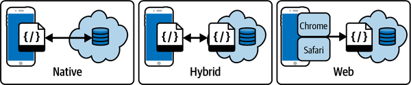

Salesforce offers several different options for mobile device application functionality. When contemplating your options for mobile, take care to gather a full perspective on the capabilities of each. Names and features in this space are highly fluid. In addition, Salesforce’s investment in the mobile landscape changes from year to year, and new platform offerings and acquisitions alter the momentum behind each stack. Salesforce isn’t much different from other platforms trying to navigate the rapidly changing mobile technology landscape in these regards.
To navigate the options available, it’s important to understand the different types of mobile applications. For the purposes of this book, we’re going to group them into three categories: web-based, native, and hybrid. These distinctions are important for security and fit for each use case they serve. Some offer highly customizable, independent interfaces while others are prebuilt and only partially customizable. Compatibility, functionality, and capabilities also vary across platforms (iOS or Android) and device types. It is therefore crucial to have a clear device roadmap solidified before starting any major Salesforce implementation that includes mobile device access.
At a high level, we can distinguish between three types of mobile applications: native, hybrid, and web. Web-based applications have code and functionality available on the internet and displayed in the very open standard of HTML. Every browser application is supposed to conform to the standards of what each element has been defined to serve. Web applications all create functionality in the same way. It is no coincidence that when you are viewing websites on different devices with different browsers (e.g., Edge, Chrome, Safari, Firefox, and Opera), the pages mostly look the same. Some web app frameworks, like Salesforce, can be optimized for different screen sizes and devices, but only to a certain extent. Native mobile applications can be either more or less restrictive than web applications; the key point with this type is that they require more effort to customize, with the benefit of being fully customizable. Salesforce has tools available to create all of these variants:
Web applications that can be almost fully customized (within the context of web controls)
Native applications that offer very few customization options
Native applications that offer moderate customization options
Hybrid applications wrapped in native shells that are highly customizable (within the context of web controls)
Native applications that are highly customizable
Web applications can be built with many different underlying languages, but the HTML output that is sent to us when we open a URL in our browser is mostly the same. Forcing the many hardware and platform providers to all start speaking a single common language was one of the things that drove the explosion of the web: we finally could access many systems with a small set of applications installed on our devices. It became very gauche to require custom software (not a web browser) to access your application. Adopting this new open standard for receiving information from the internet reduced the burden on users to keep up with interfaces for each company’s data. Ease of consumption won out over proprietary delivery.
After the web took off, malicious websites started to become something we had to worry about. Browsers had to sacrifice more and more functionality to make sure that critical systems on the client side couldn’t be attacked. The web browser is supposed to be a simple window through which we are viewing web content. The innovation of web technologies had to keep pace with bad actors that were turning up. Web browsers have a very limited set of operations that they can perform on a user’s device. Grabbing GPS location information is allowed, but only with permissions. Reading from the device storage or hard drive is not allowed. Turning the device on or off is definitely not allowed. Web page code is also not supposed to be able to perform other types of on-device functions, like “read my personal files,” “turn on my camera,” “send something to my printer,” and “read my fingerprint.” Many of these things are still possible via websites, but layers of security exist to ensure you are in control of when and how they happen.
Ninety-five percent of web applications live on a server in a building that could be anywhere. The other five percent are pulled across the internet and appear in your browser. You are looking at the intentional output of the application server to your device’s browser. Any heavy lifting, like data storage or building a custom PDF, is done on the server side. The actual code that does the heavy lifting is executed on the server, and your browser is only sent the resulting file. (That said, offloading server work to a browser is a common pattern these days; some of these heavy lifting functions can move to the browser.)
Native mobile applications are primarily built the other way around with regard to the code. Most of the code lives on your device; the data, if any, is pulled from servers over the internet. There is still lots of code on remote servers, but the code that you are interacting with is running on your device (at least, more so than with web applications). Code created for mobile devices has generally been built with a bit more trust and better cooperation with the physical hardware functionality of your device.
With the added trust and features of native mobile applications, a native application can get access to and listen for actions coming from another application. An example is when an authentication code is sent from an application to your SMS text message account for your phone. Native apps can be given permission to watch your SMS application and read the data in the messages themselves. This process would be almost impossible to implement with a web application, although capabilities are growing for these apps to have more device access safely. Currently, native applications still have the advantage when it comes to direct and trustable integration directly with hardware features.
The final advantage of native applications is being able to cater to very specific screen sizes, like smart watches and rings, cash registers, and handheld scanners. Web applications assume a certain minimum size and shape. The majority of the various smart devices in use today are simply not able to easily take advantage of the niceties of HTML and web pages: the screens are too small to offer a reusable experience, and battery and power limitations that also impact processing power figure into the experience as well.
Hybrid applications attempt to get the best of both worlds by having a native application “shell” and also being able to pull in and reuse web content. They still have to be installed from an appropriate app store, but hybrid apps can implement fully custom native controls as well as displaying custom web content. The amount of custom code you need to write can be reduced if existing web pages can be brought in to use and interact with the native component shell. A hybrid app is basically an enhanced and customizable web browser, locked to process content according to your rules. As long as those rules are similar to regular rules for web applications, you can make use of a single code base to serve both types. Designing something that can possibly work for both purposes is hard—you have to build a discipline for managing multiuse code—but it’s almost always worth the effort to avoid having two entirely separate code bases to maintain.
Figure 9-1 provides a very high-level illustration of the difference between the three types of mobile applications and where the bulk of the code lives in each type. While a hybrid approach provides the most flexibility, the trade-off is managing more than one code base for display functionality.

The Salesforce mobile app, formerly known as the Salesforce1 app, is one of several native applications in the Salesforce ecosystem. This native app is designed to surface Salesforce application data to the licensed internal users of your Salesforce org. (Serving content to customers or external users is covered in the next section.) The app is capable of displaying all of the major types of data from the web application. It is very useful for working in standard ways with standard requirements within a modern utility application. It’s perfect for people working with Salesforce data on a day-to-day basis. The Salesforce mobile app is mostly a native mobile app with some ability to frame in content written for the web. If you create custom data for people to use and manage, you will not need to worry about the differentiation between the web application and the native mobile application. The mobile app is available for no additional license cost and is an effective analog to the web interface.
The mobile application can present challenges, however, for requirements that are not easily expressed in standard Salesforce data fields and actions. The freedom of design you have with web pages does not translate into the standard Salesforce mobile app; you do not have the control to make it look exactly like you may have envisioned. The mobile app checks the box of “build once, deploy twice,” but if you want to go truly custom and details matter, you will be building once for desktop web and once more for mobile. Salesforce’s mobile app is designed with the usability needs of daily users in mind. Other use cases should consider other options.
From a user experience (UX) perspective, you’ll typically want to build highly custom interfaces for two reasons: to entice users into interacting with your application or to make a complicated process easier to understand. Increasing appeal or clarity usually involves reducing information density. The Salesforce mobile app keeps to a very specific information density that is good for users who have a strong motivation to use the tool and/or are already familiar with the tool. (The more familiar you are with something, the more information density or noise you can tolerate.)
While most consumer tablets can run the exact same applications as their smaller-screen siblings, Salesforce has also created a mobile app variant exclusively for tablets. The tablet version of the mobile app has a few key differences and additional features, compared to the standard mobile app. For example, there are more customizable landing pages and increased flexibility with regard to content in page layouts. On the whole, it’s a slightly more customizable experience. The tablet version is available on all current iPads, including the iPad mini. If mobile usage is your target, make sure you look at both options.
The Salesforce Mobile Publisher tool allows you to transform your Experience Cloud (Community) sites into branded, instantly deployable mobile applications. Whereas the Salesforce mobile app is intended for your employees and coworkers, the apps created with the Mobile Publisher are for your customers or external users. Any browser can access your Community sites, but the Mobile Publisher packages them as downloadable applications, available via Google Play and Apple’s App Store. You can give each application a custom icon and name. There are many popular brand loyalty apps in the app marketplaces that are Mobile Publisher apps behind the scenes. Salesforce manages most of the lengthy security and review processes for you (though some circumstances may require some interaction), so there’s no need to hire a mobile app technology team to manage or deploy your customer interaction portal mobile app. Your new mobile application is updated every time you update your community data or the Mobile Publisher layouts that reflect your Community site.
Salesforce Field Service (formerly Field Service Lightning) is a native mobile app tied to a specific license for Salesforce. It is focused on service tickets and technician routing, and it adds some features to the web-based interface. If you are considering Service Cloud as a part of your implementation, make sure you explore this app, which brings ticket and case management functionality and other platform features to your licensed users. (Remember, most “Clouds” are just additional functionality on your platform instance.) The Field Service app is based on the React.js framework but is not currently open for editing or customization directly. It supports LWC component additions, but does not alter the rest of the application itself (LWC components are displayed as items in a container; they cannot alter the container). React is a modern framework, so compared to other native applications you may have used, Field Service will likely look newer and have support for more features.
Salesforce continues to invest in mobile technologies according to demand and popularity. The divide between curated customer experiences and data-driven, one-size-fits-all employee experiences will likely continue to deepen. Devices and experiences will continue to be shaped by acquisitions of tools customized to more specific use cases. Look for additional offerings to come out of Salesforce for specific functionality around health care and financial services, two areas that are seeing huge growth in adoption of the Salesforce platform. All of the out-of-the-box offerings can immediately be used to add capabilities to your organization.
Customizable mobile applications and custom mobile applications are two very different things. Deploying anything beyond the out-of-the-box experience can require exponentially more investment. If you are moving into the Salesforce space and are not already invested in mobile application development, don’t expect Salesforce to be a silver bullet. There are many hidden skills that must be hard-won to start delivering custom mobile applications to your end consumers. Delivering to employees is easier because you can specify a consistent device, hardware, and security profile. Adding complications like VPNs and support for devices made by different manufacturers with different-sized screens and a variety of versions and carriers can exponentially multiply the effort and resources required to get functionality to consumers. Factor in product updates and add-ons that are not perfectly integrated with the mobile view, and you can end up on a long and painful path.
One of the trends to watch in the mobile space is adapting to the support costs involved with the Android operating system. Since Android is free and open source, every manufacturer is allowed to alter the operating system to suit their purposes. Each of these variations can cause app developers more effort to accommodate them. This problem is not limited to Salesforce by any stretch; it’s known in the industry as “Android fracturing.” The result is that “bring your own device” (BYOD) strategies carry the unintended consequence of a support penalty. Salesforce has acknowledged this by limiting its Android support to Samsung only. This should only impact you in the long term as Samsung and Apple device prices grow with reduced competition.
Worldwide innovation in mobile development has slowed since the start of the pandemic. As regular work patterns resume, we should see more acquisitions and integrations supporting mobile devices. Behind the scenes, there have been many powerful integrations with omni-channel communications tools. Salesforce’s Omni-Channel feature reaches your users where they are, mobile or desktop, in the channel apps that many are using, like Facebook Messenger or SMS messaging systems. Investing in mobile communications over mobile apps may speak better to the next generation of digital consumers. Providers will want to watch and adapt to the online communication style of more adaptive younger users. This generation of users will likely stick largely to the current, proven channels, but you should always be ready to follow your users if that changes.
In addition, as mentioned in the previous chapter, VR is finally on the horizon. There are pending versions of VR hardware that may be able to get over the weight, look, and safety hurdles currently keeping VR out of the mainstream. In 2018, I demoed the first WebGL/Aframe.io integration with Salesforce at Dreamforce. Aframe.io is a lightweight JavaScript library that simplifies some of the native WebGL JavaScript library’s functionality. These libraries are a bridge to allow for VR experiences to be expressed in web pages—so, with the right application of JavaScript, your Salesforce site could be available in VR. There have been other, more official VR applications and proofs-of-concept since then, with other platforms and frameworks. The technology to bring existing software into VR already exists. The hardware just needs another solid improvement to hasten adoption.
Implementing Salesforce is an easy win on multiple fronts with regard to delivering mobile functionality on varying screen sizes. Salesforce provides turnkey mobile solutions that suit a wide range of use cases. If you think you will need a completely custom solution, go full custom off-platform. If your business can accept a “very good” experience, you will find many easy opportunities to achieve that with a fraction of the investment in custom mobile app frameworks, processes, and skills. The mobile landscape is currently changing slowly, but advancements are unpredictable. Keep your strategies flexible and loosely coupled to be able to absorb and adapt to changes.